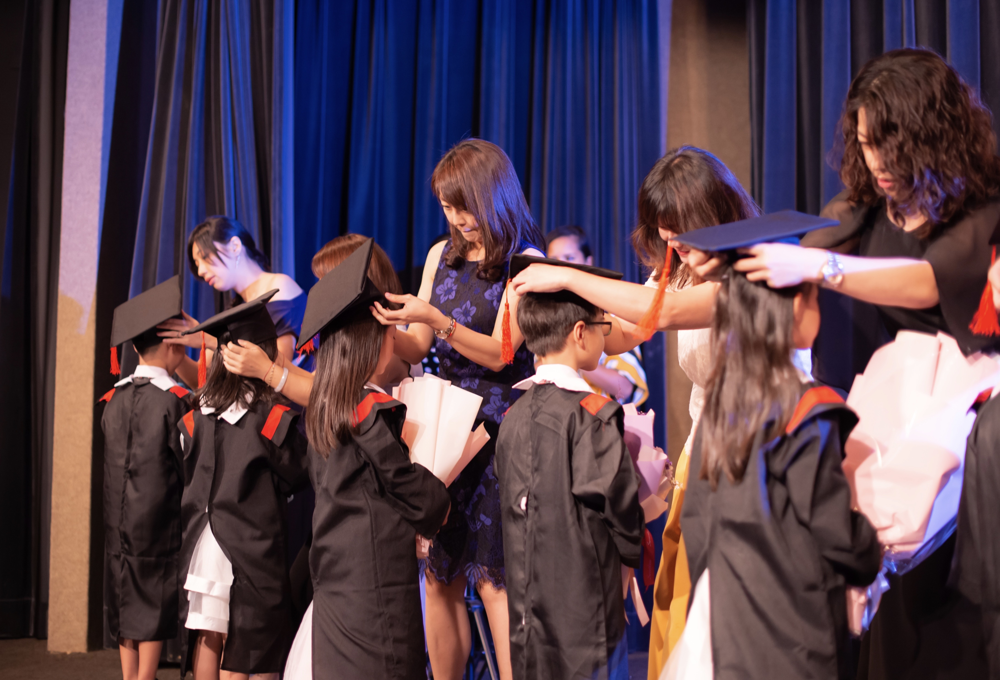
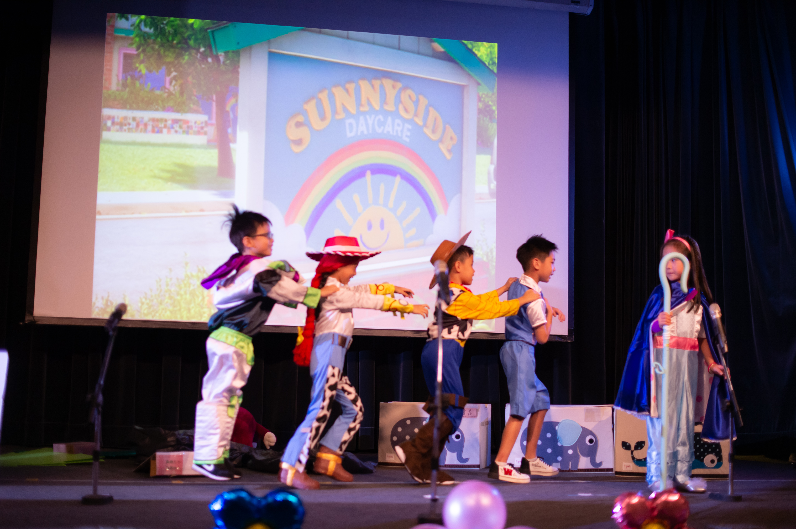
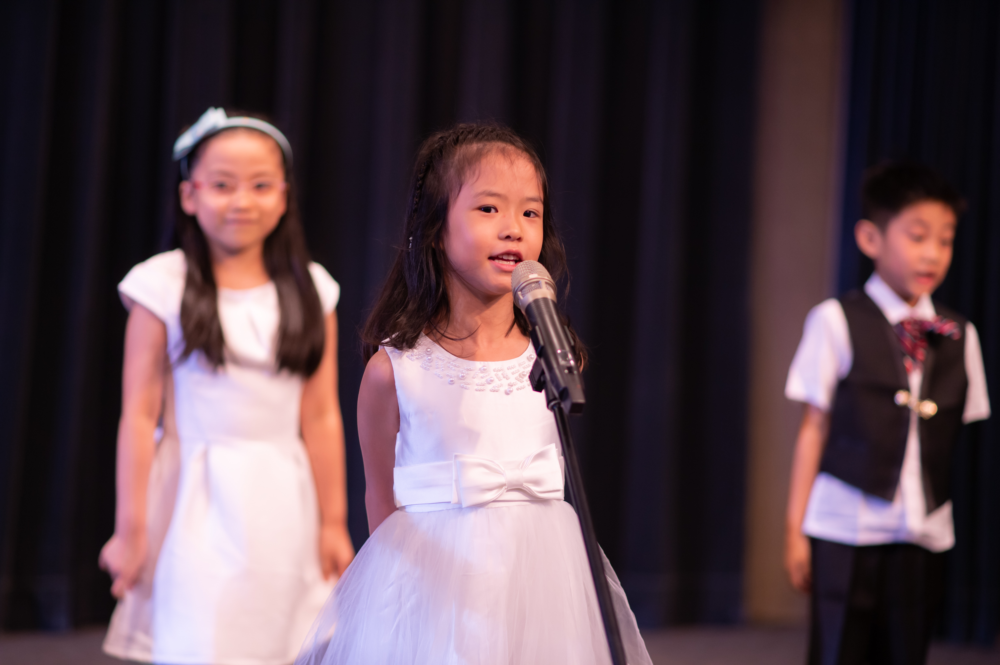
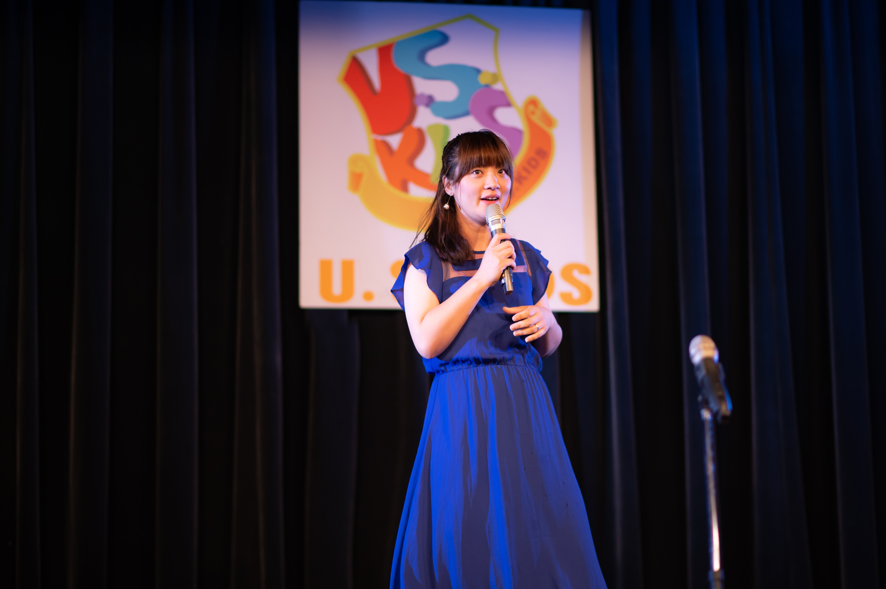
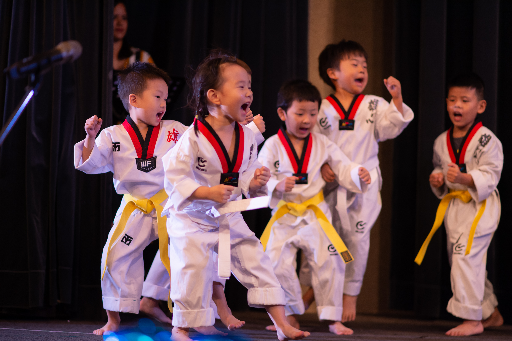
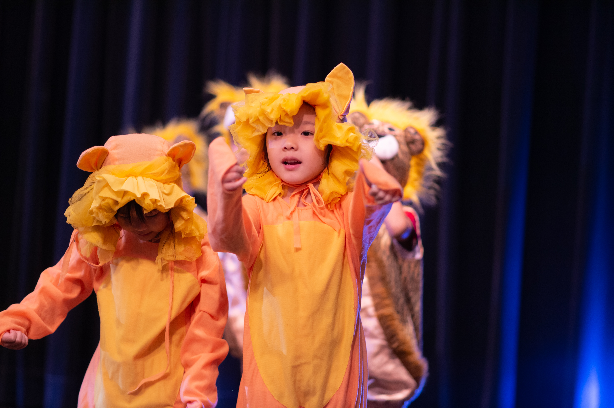
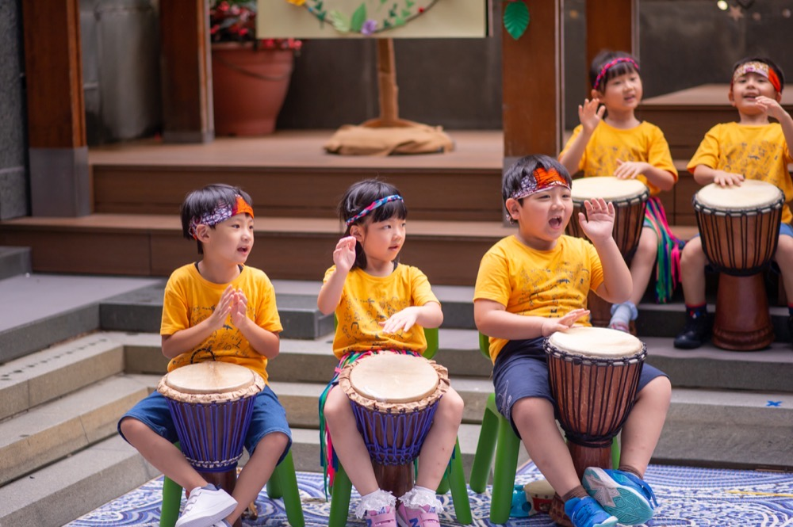
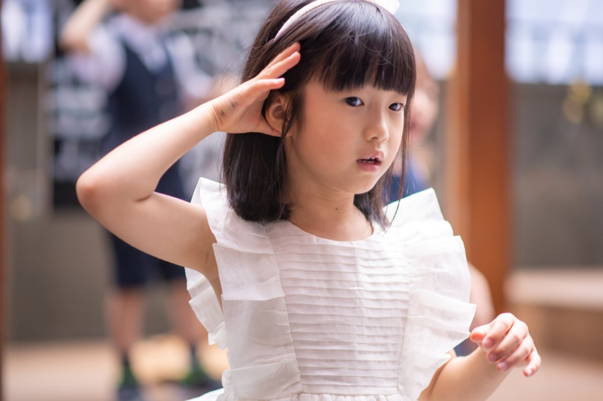
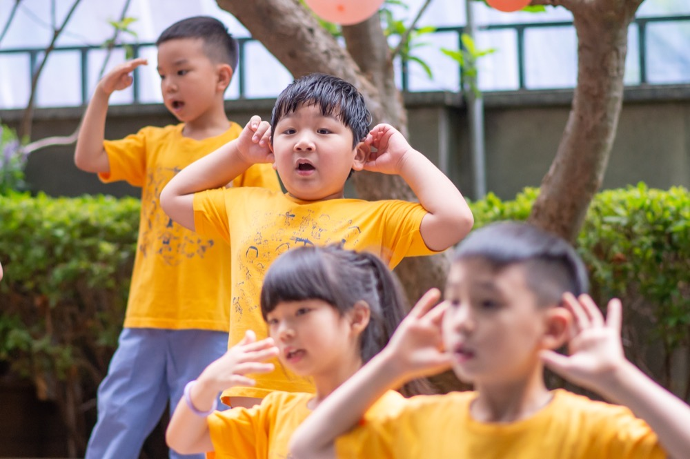

幼兒園畢業典禮攝影
畢業典禮作品
典禮紀錄影片、精華短片與照片精選。若想看學士服個人照、班級大合照等畢業照作品，請至：畢業照作品。
典禮紀錄與精華短片
以下為幼兒園畢業典禮的紀錄影片與精華短片，實際成品長度與畫面風格可參考影片。
幼兒園畢業典禮紀錄 1
幼兒園畢業典禮精華 2
幼兒園畢業典禮精華 3
畢業典禮照片精選
以下為不同幼兒園畢業典禮的實拍畫面，版面以拼貼式作品牆呈現；點擊縮圖可放大瀏覽。














